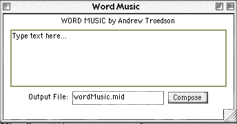

|
|||||||
Guido Word Music
This is an implementation of one of the oldest known algorithmic music
processes.
It is rule based, not recombinatorial. Each vowel is allocated a pitch.
This implementation is not strict (as the original was designed for Latin
texts) but has been adapter to Roman languages and modern tonal sensibilities.
It is quite intriguing how close this process is the Arvo Pärt's
compositional processes! (Read about it in Hiller's book on Pärt.)
The interface:

This demo is a realisation of Mozart's design in jMusic by Andrew Troedson.
Click here to view source part 1.
Click here to view source part 2.
To hear the result play the Quicktime movie below.
Andrew Troedson's comments:
An Overview
Based on Guido d'Arezzo's lookup chart for generating pitches from syllables
(ca. 1000 A.D.), this melody generation tool creates a monophonic phrase
by extrapolating from a given text. A set of rules (see Table 2.1 below)
is used to select note pitches depending on the vowels found in the text.
Although d'Arezzo's original intention was simply to provide an approximate
guide from which a composer could make selections to fit his/her taste,
this tool automates the process, and itself chooses from the given note
options.
As well as this, the wordMusic tool sets the selected notes to a rhythm
dependant on the number of consonants between each vowel (see Table 2.2).
Table 2.1: The note pitch value options assigned by wordMusic to each vowel
| g2 |
a2 |
b2 |
c3 |
d3 |
e3 |
f3 |
g3 |
a3 |
b3 |
c4 |
d4 |
e4 |
f4 |
g4 |
a4 |
| A |
E |
I |
O |
U |
A |
E |
I |
O |
U |
A |
E |
I |
O |
U |
A |
Table 2.2: The rhythm values assigned by wordMusic dependant of the number of consonants between each vowel.
| <2 |
2-3 |
4 |
>4 |
| Quaver |
Crotchet |
Minim |
Dotted Minim |
Technicalities
This interpretation of d'Arezzo's lookup chart is set up in a single
class, wordMusic.java.
However, a GUI interface which utilizes this class and allows new text
to be easily entered, has also been created and is called wordMusicMaker.java.
The default name of the generated MIDI file is "wordMusic.mid", although
this can be easily changed when using the GUI interface.
Observations
This melody generation tool, while based on a set of very simple rules,
is quite effective in creating musically interesting phrases.
Because the music it composes is generated entirely based on this set
of rules, it can be said to be taking an algorithmic approach to the generation
of music.
Initially, the simplicity of the rules used can be deceiving, however
when looked at more closely, they do have some theoretical grounding.
Most melodies that are written for specific texts do set notes to every
syllable, and the rhythm of the text does in general have some relationship
to the
length of the words (and the distance between adjacent vowels).
Although this is not an exact relationship (and problems occur with words
that do not contain vowels, for example "sky"), the results produced by
its
implementation are very acceptable. It should also be noted that the original
rhythm algorithm involved a greater variety of note lengths
(ranging from semiquavers to semibrieves), however this was simplified
as the resulting phrases tended to be somewhat disjointed.
Of course, the algorithm used could be extended further to take voice
leading into account, or could even be developed to produce polyphonic
phrases,
however, in its current form, the wordMusic melody generation tool does
provide a good example of the possibilities of algorithmically generating
music - even with only the simplest of rules.
The code:
Let's have a closer look.
/* |
It mainly implements a GUI which calls the wordMaker class whose code is below.
/* A class which generates music from words |
The main thing to notice is the switch statement which checks to see if the nexts letter is a vowel.
A switch statement is also used to select a duration based on the number of letters between vowels.